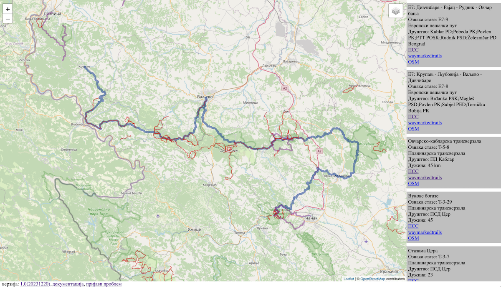

Кратак опис функционалности
Пријави проблем
Проблем са подацима можете пријавити на tereni@pss.rs.
Коментаре и сугестије везане за приказ података и функционалност мапе можете послати на мејл vanjakom@gmail.com.
Пријављени проблеми биће евидентирани на страници
проблеми. Након контактирања клуба који је одговаран за терен и решавања проблема страница ће бити освежена.
Кратко упутство

Екран апликације је подељен на два дела. У левом делу налази се мапа која приказује стазе из Регистра Планинарског савеза Србије. Стазе су приказане различитим бојама и дебљинама у зависности од типа:
Мапу је могуће увећати ( притиском на дугмиће + и -) и позиционирати померањем миша са притиснутим тастером.
У десном делу се налази листа свих стаза које су тренутно видљиве на мапи. Листу је могуће скроловати.
За сваку стазу приказани су име стазе, ознака, тип ( планинарски и пешачки пут, планинарска трансверзала и еврпоски пешачки пут ), друштво које одршава стазу и линкови ка страници стазе на сајту Планинарског савеза, специјализованом сајту за пешачке стазе и OSM бази.
Притиском на дугме за одабир слојева, могуће је променити подлогу и податке приказане на мапи. Дугме се налази у горљем десном углу мапе. Могуће је одабрати:
Верзионисање
Верзија мапе је описана у следећем формату: Г.П(Д) на пример: 1.0(20231219)
Г - представља главну верзију мапе, уколико се направи нека већа измена овај број ће бити повећан за један
П - помоћна верзија, уколико се исправи неки проблем или дода нека мања функционалност овај број ће бити увећан за један
Д - датум када су узети подаци из OSM базе
За сваку промену главне, помоћне или нову верзију података који садрже измену биће додато обавештење на страници о
верзији које ће садржати кратак опис иземене.
Услови коришћења
Подаци приказани на мапи увежени су из OSM базе и доступни су под ODbL лиценцом.
Начин приказа података и функционалности ове мапе доступне су под MIT лиценцом.
Планинари и OSM
У току је рад на пројекту
Планинари и OSM а последњу верзију водича можете видети на
страници.
Циљ пројекта је да пружи на једном месту информације планинарима потребне да користе и доприносе OSM мапи.
Технички подаци
Изворни код пројекта се налази на
github.
Подаци из Регистра планинарских терена Планинарског савеза Србије су увезени у OSM у склопу пројеката
ПСС стазе и
Одржавање пешачких стаза Србије.